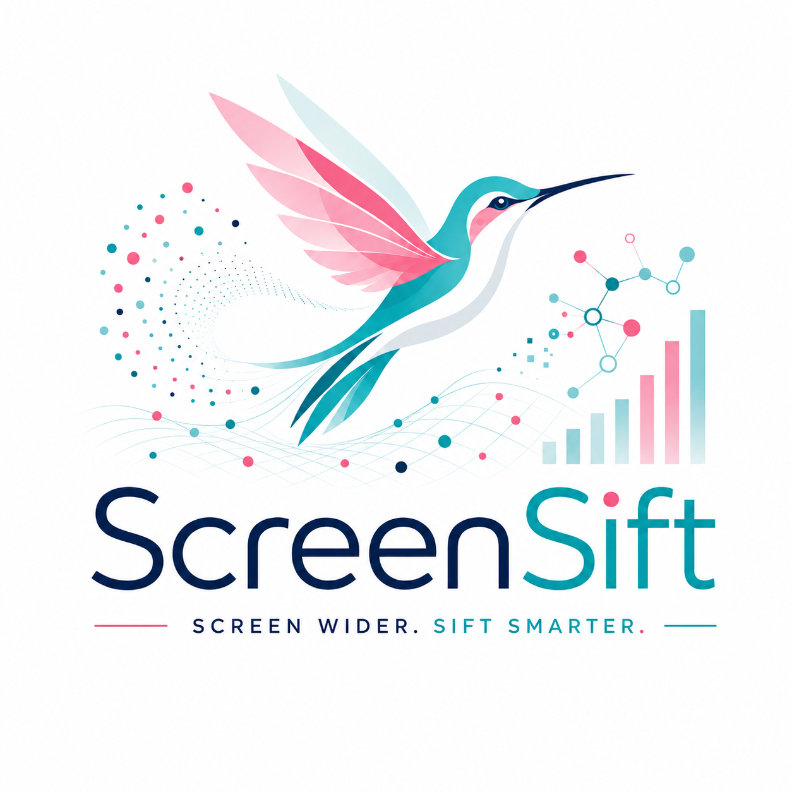
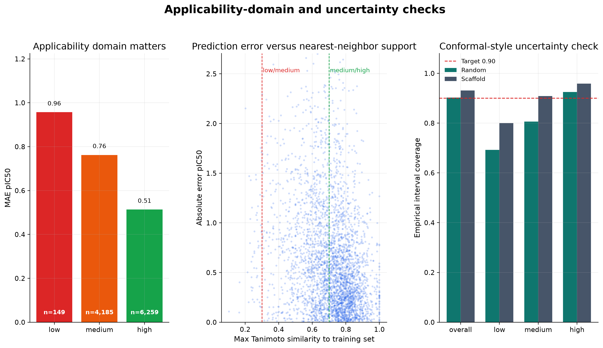
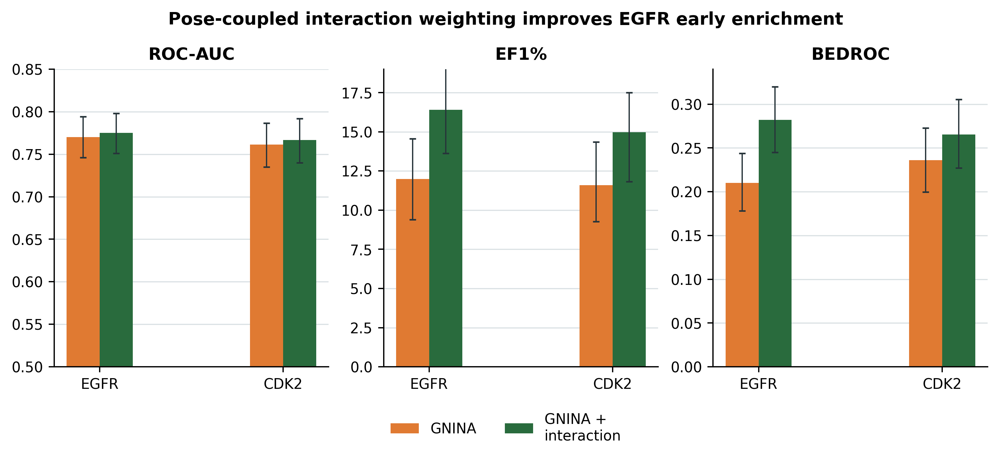
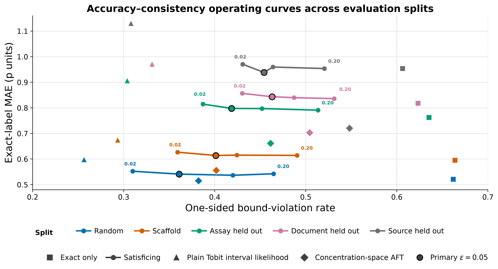

Molecular machine learning
Machine learning for molecular and biological data, with emphasis on model validation, representation learning, and decision-support workflows for therapeutic discovery.
Computational chemistry · machine learning · cheminformatics
I am a chemistry PhD candidate and I work at the point where chemistry, biology and machine learning meet.
I build Python-based molecular ML and CADD workflows for pharma-adjacent research, combining antibody/protein sequence data, protein language-model embeddings, RDKit descriptors, PyTorch/scikit-learn models, and careful validation.
This site collects projects I've done throughout the years and experience I've gained.

Machine learning for molecular and biological data, with emphasis on model validation, representation learning, and decision-support workflows for therapeutic discovery.
Sequence-based modeling of antibodies and proteins using paired-chain representations, k-mer features, protein language models, and biologically informed evaluation.
Computational workflows for small-molecule discovery, including molecular descriptors, fingerprints, QSAR modeling, scaffold-aware validation, ADMET-aware filtering, and candidate prioritization.
DFT, molecular dynamics, and molecular simulation workflows used to connect structure, energetics, and experimental evidence in chemistry and materials research.

Small molecules
ScreenSift is a Python package for a practical virtual-screening problem: combining 2D ligand-similarity evidence and 3D docking/rescoring evidence into one ranked ligand table while preserving the reason each compound was selected. It curates molecules with RDKit, validates receptor setups with native-ligand redocking, screens with Uni-Dock, rescores with GNINA, adds ECFP4/Tanimoto similarity, and normalizes the channels into transparent evidence buckets.
I validated it on the LIT-PCBA MAPK1 benchmark across two redocking-validated receptor setups (4QTA, 6SLG). A combined similarity/structure ranking recovered a top-100 shortlist enriched ~11.8× over the base active rate. It ships as an installable find_candidates API and a config-driven CLI.
51,507 scored ligands · 4QTA + 6SLG · combined 2D/3D triage · ~11.8× top-100 enrichment · 122 tests, CI

Small molecules
This project builds an EGFR CADD/QSAR workflow using public ChEMBL IC50 records. I curated molecule-level activity data, standardized molecules, generated RDKit descriptor and Morgan fingerprint features, benchmarked QSAR models under multiple validation settings, and used the trained scoring workflow to review existing EGFR inhibitor-like records.
This project tests how much useful modeling can be done from public EGFR IC50 data, while also checking where the model becomes unreliable.
10,593 molecules · scaffold R² 0.550 · redocking RMSD 0.968 Å

Biologics
This project builds an antibody sequence ML pipeline using public SARS-CoV-2 antibody records. I curated labeled public records, trained ML models to learn patterns associated with neutralising versus non-neutralising sequences, and then used the trained model scoring workflow to prioritize existing OAS antibody records that look most similar to known neutralizing antibodies. The goal is finding existing records that may be worth closer expert review.
5,573 strict labeled records · grouped ROC-AUC 0.780 · OAS top-25 shortlist

Reaction informatics
This project builds a reaction-yield modeling workflow using public high-throughput experimentation (HTE) data. I curated public Buchwald-Hartwig reaction-yield records, built categorical component-label features, benchmarked simple ML models, and tested whether performance holds when reaction components are held out rather than only shuffling rows.
The goal is to evaluate how far public HTE records can support yield prediction, uncertainty checks, out-of-component validation, active-learning simulation, and existing-record ranking without generating new chemistry or claiming experimental success.
3,955 public HTE records · additive-held-out R² 0.726 · Spearman 0.860

Cheminformatics · Structure-based drug design
Mitropoulou, E.; Giannopoulos, D. ChemRxiv, 2026.
Syndesis couples a neural docking score with recovery of target-native interactions from the same receptor-specific pose, improving early enrichment on EGFR and providing a target-transfer analysis on CDK2.
EGFR EF1% 11.98 → 16.40 · CDK2 EF1% 11.60 → 14.98

Cheminformatics · ADMET
Mitropoulou, E.; Giannopoulos, D. ChemRxiv, 2026.
CensorADMET preserves inequality-labelled ADMET measurements as interval constraints and evaluates how models trade exact-value accuracy against consistency with known assay bounds under chemical and provenance shift.
8 CYP, hERG and ABCB1 endpoints · 5 shift families · explicit probability-deficit control
Supervised and unsupervised learning · neural networks · model fine-tuning · molecular and biological data curation · benchmark design · model validation · held-out testing
Antibody and protein sequence ML · protein language models · sequence embeddings · Hugging Face Transformers
RDKit · ChEMBL · molecular descriptors · molecular fingerprints · QSAR modeling · scaffold-aware validation · drug-likeness and ADMET filtering · compound ranking and prioritization
Python · PyTorch · scikit-learn · pandas · NumPy · SciPy · Matplotlib · Linux · Bash · Git/GitHub · Docker · cloud and VM environments